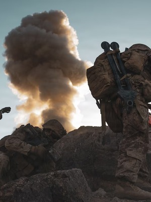

Infantry Officer (0302)
Infantry Officers lead Marines employed from the team to regimental level to locate, close with, and destroy the enemy in all environments and weather conditions, day and night. They must be masters of field craft and proficient in the use and operation of small arms, demolitions, rockets, and mortars.